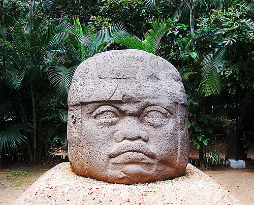
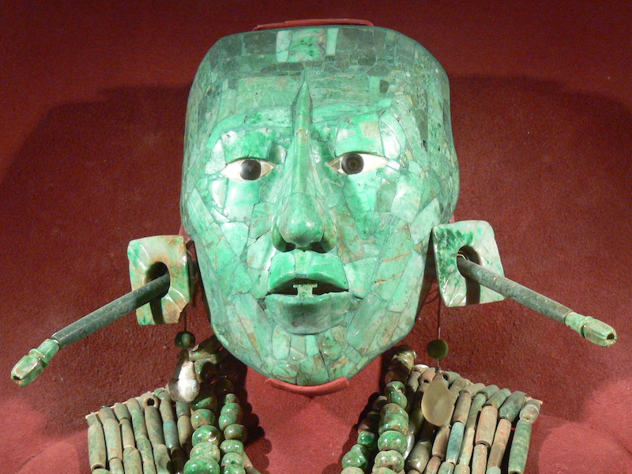
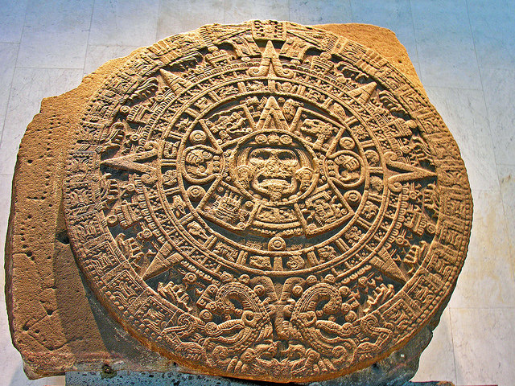
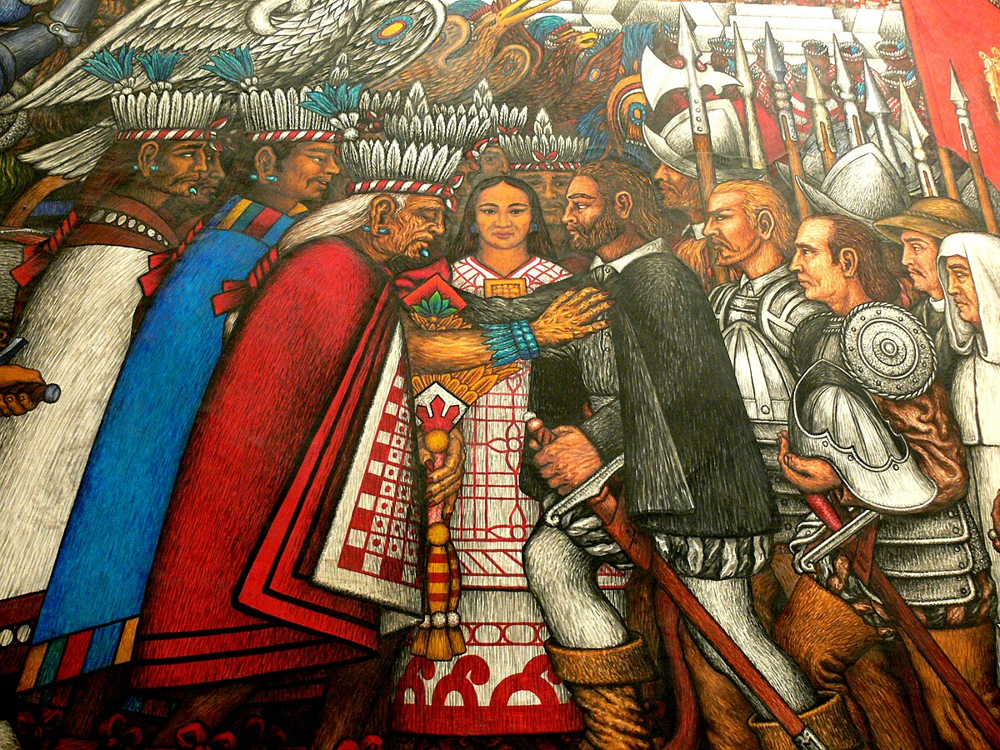
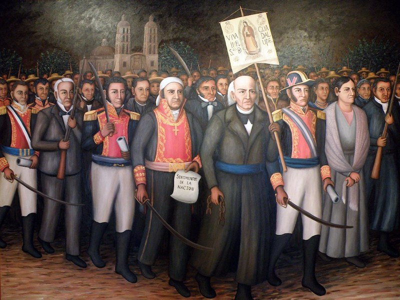
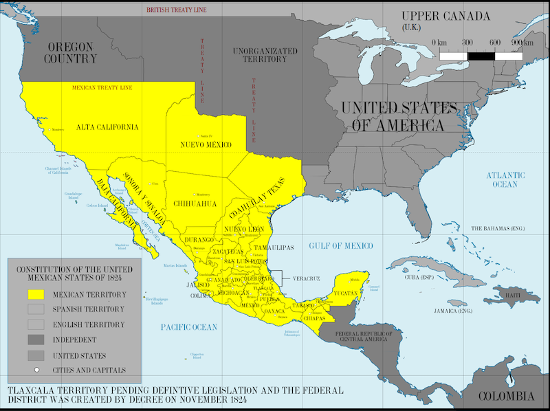

Mexican history
On this page, my goal is to show you why the history of Mexico is one of the most interesting histories you can learn about anywhere in the world.
The reason why it is so interesting is that the history of Mexico is a blend of the indigenous culture of the native Mesoamericans and the Spanish culture introduced through the discovery of the Americas.
Here, I will present the outcomes of this combination and how it continues to unfold.
Olmecas
The Olmecs were one of the most ancient civilizations, not only in Mexico but in the entire world. They flourished approximately from 1500 BC to 400 BC. This civilization encompassed the modern-day regions of the Gulf of Mexico, the state of Veracruz, the state of Tabasco, and even Oaxaca.
One of the most well-known sites of Olmec culture is the statues of heads found at La Venta (present-day Tabasco).

Image source: source
Mayans
Perhaps you have heard of them, but the Maya were of greater importance than anyone else in Mesoamerica and in the entire world.
The Maya offered us many advancements in mathematics, astronomy, architecture, and writing. In fact, the Maya were the first to implement the number zero in our system of counting.
It settled primarily in the southeastern Mexico (specifically the states of Yucatán, Chiapas, and Quintana Roo)as well as parts of Guatemala, Belize, and Honduras; they constructed numerous architectural works, such as Chichén Itzá, Palenque, and Tikal.

Image source: source
{kind=link}
Aztecs
The Aztecs were the most powerful civilization in Mesoamerica, and one of the most powerful in the entire world; they developed enormous cities.

Image source: source
Mexico - Tenochtitlan
Mexico City-Tenochtitlan was the largest city in the world in its time, during the 14th century. The interesting thing about this city is that it was built upon a lake known as Lake Texcoco.
Today in Mexico, Tenochtitlán is what is known as Mexico City. This city was a hub of temples, markets, and canals an was the political, religious, and economic heart not only of the Aztec Empire but of basically the entire American continent.
Info source: source

Image source: source
{kind=link}
Colonization
Since Christopher Columbus arrived in the Americas in 1492, there have been many connections between the Spanish and the civilizations in Mexico.
This ultimately led to the colonization of the mighty Tenochtitlán by the Spanish peiple in 1521; this event is known as the Fall of Tenochtitlán.
This involved a combination of religions, traditions, cultures, and customs, and this colonization lasted for more than 300 years.

Image source: source
Independence
After 300 years of harassment and plundering of Mexico by the Spanish, the independence movement organized by Miguel Hidalgo y Costilla. This war started in 1810 and culminated in 1821.

Image source: source
War
Following the War of Independence, the country was left in ruins, giving rise to a host of internal problems. External challenges also emerged most notably from the United States, which ultimately seized more than half of Mexico's territory as a result of the Mexican-American War. Not only the United States, but France and other nations also went on to invade Mexico.

Image source: Source
{kind=link}
Mexican Revolution
When discussing Mexican history, we cannot overlook the Mexican Revolution. This armed conflict began in 1910 specifically one hundred years after Mexico's independence and erupted after a dictator named Porfirio Díaz, who had held power for over thirty years, had long oppressed the Mexican people; in response, an armed group rose up against him. Pop culture icons such as Francisco Villa and Emiliano Zapata played leading roles in this historic event.

Image source: source